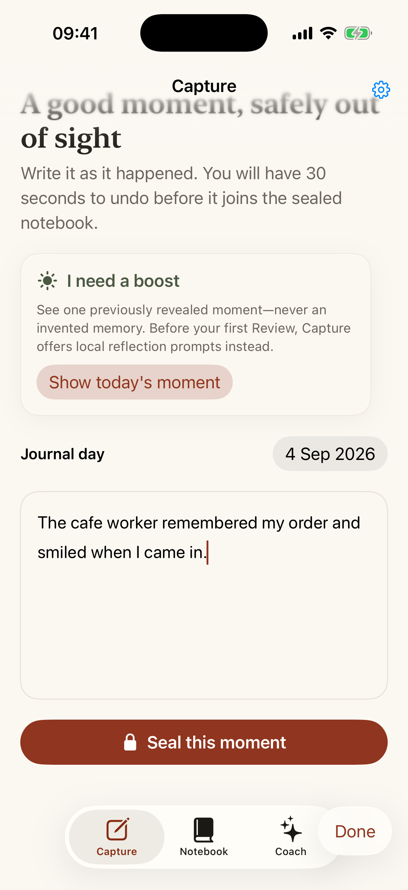

Record what happened
Keep it concrete: the words, gesture, help or invitation. You do not have to guess what somebody was thinking.
A private log for the social evidence you usually miss
Someone remembers your order. Uses your name. Makes room. Says “no worries.” Record what actually happened without deciding what it meant. Posi-Side seals each note, then returns the collection later—when you can see the pattern instead of arguing with yourself in the moment.

The whole ritual
One uncomfortable interaction can dominate a whole day while ordinary warmth becomes background noise. Posi-Side helps you keep the observable counter-evidence without turning every moment into an analysis exercise.
Keep it concrete: the words, gesture, help or invitation. You do not have to guess what somebody was thinking.
You have 30 seconds to undo before the note seals. Pick a wait from one day to one year so you cannot repeatedly reread or argue with it.
When the cycle matures, a seven-day Review Window returns the moments together—the pattern matters more than any single entry.
Private by design
Moment text is encrypted on your iPhone. Posi-Side requires no account, and its current App Store privacy label is Data Not Collected.
.posiside archive when you choose.A quieter record of the world
“Maybe people were kinder than the loudest moment made them seem.”
Available now for iPhone
For iPhone running iOS 18 or later. Up to six family members can use the purchase when Family Sharing is enabled.